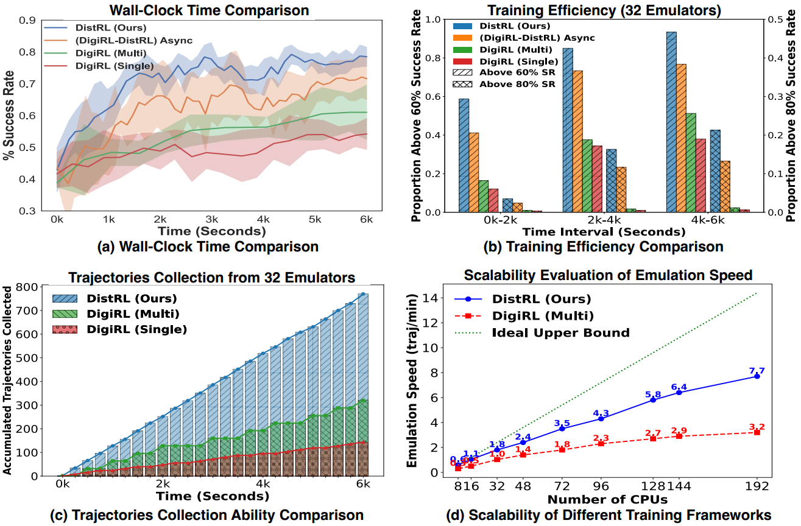

A-RIDE: The Backbone of DistRL
Our method employs advantage-based estimations to refine policy gradient updates, as an extension of Generalized Advantage Estimation (GAE) by Schulman et al. (2015), effectively balancing exploration and exploitation in the learning process.
By introducing a trace decay parameter, A-RIDE manages the bias-variance trade-off in advantage calculations, optimizing the stability and convergence of the policy. A-RIDE incorporates enhancements tailored to distributed, asynchronous environments, ensuring robust policy stability and efficient learning in complex device control tasks.
The Retrace(λ) update is defined as:
Q(st, at) ← Q(st, at) + δt, where the correction term δt is calculated as:
δt = ∑k=tH γk−t (∏i=t+1k ci) [rk + γ Q(sk+1, ak+1) − Q(sk, ak)].
Here, Q(st, at) is the estimated action-value function; γ ∈ [0, 1] is the discount factor; H is the time horizon; ci = λ min(1, ρi) with λ ∈ [0, 1] being the trace decay parameter; ρi = π(ai|si) / μ(ai|si) is the importance sampling ratio between the target policy π and the behavior policy μ.
To ensure effective exploration within the action space and prevent the generation of nonsensical or invalid commands, we incorporate entropy regularization into the actor loss function:
ℒ = −𝔼μ[ρt A(st, at) log π(at|st)] − β 𝔼μ[ℍ(π(at|st))] + λ 𝔼μ[𝒫invalid(at)],
where A(st, at) represents the advantage function, defined as the difference between the action-value function Q(st, at) and the state-value function V(st): A(st, at) = Q(st, at) − V(st). The entropy term ℍ promotes exploration, and 𝒫invalid(at) imposes penalties on invalid actions. The parameters β and λ are tuned to balance exploration and stability.
DistRL Pipeline
DistRL adopts a distributed asynchronous setup where multiple worker agents generate trajectories under the behavior policy μ and send them to a central learner.
The trajectory reward is computed using the Monte Carlo estimate:
L(Vtraj) = −𝔼ν[r(sH, aH) log Vtraj(sH, aH) + (1 − r(sH, aH)) log (1 − Vtraj(sH, aH))].
The actor is updated using policy gradients based on advantage estimates, and enhanced Retrace corrections are applied for off-policy learning. This process is distributed asynchronously across worker nodes, ensuring efficient fine-tuning in environments with sparse rewards and distributed delays.

Results

Training performance (32 emulators) between the current SoTA (DigiRL) and DistRL, highlighting the enhanced efficiency of DistRL’s distributed framework during online training. (a) Wall-clock time comparison; (b) Training efficiency comparison; (c) Accumulated trajectories collection ability comparison; (d) Scalability of different training frameworks
| Framework Type | Framework Name | General | Web Shopping | ||
|---|---|---|---|---|---|
| Training | Test | Training | Test | ||
| Prompting | AppAgent + GPT-4v | 41.4 | 43.0 | 31.2 | 35.2 |
| AppAgent + Gemini | 39.1 | 45.3 | 30.5 | 32.0 | |
| Learning | AutoUI | 38.3 | 40.6 | 42.2 | 44.5 |
| DigiRL (single, online) | 64.6 ± 1.5 | 59.9 ± 2.1 | 63.3 ± 1.5 | 59.6 ± 3.1 | |
| DigiRL (multi) | 67.7 ± 1.3 | 61.2 ± 2.4 | 64.5 ± 1.1 | 59.9 ± 2.8 | |
| DistRL (Ours) | 75.5 ± 0.2 | 73.2 ± 1.1 | 69.8 ± 0.5 | 68.5 ± 1.7 | |
Main comparisons regarding the success rate of different agents across various settings. Each experiment is repeated three times and the mean and standard deviation are reported. Results are evaluated with our autonomous evaluator with the 128 user instructions in the train and test set.
For full results and more details, please refer to our paper.
BibTeX
@article{wang2024distrl,
title={DistRL: An Asynchronous Distributed Reinforcement Learning Framework for On-Device Control Agents},
author={Wang, Taiyi and Wu, Zhihao and Liu, Jianheng and Hao, Jianye and Wang, Jun and Shao, Kun},
journal={arXiv preprint arXiv:2410.14803},
year={2024}
}